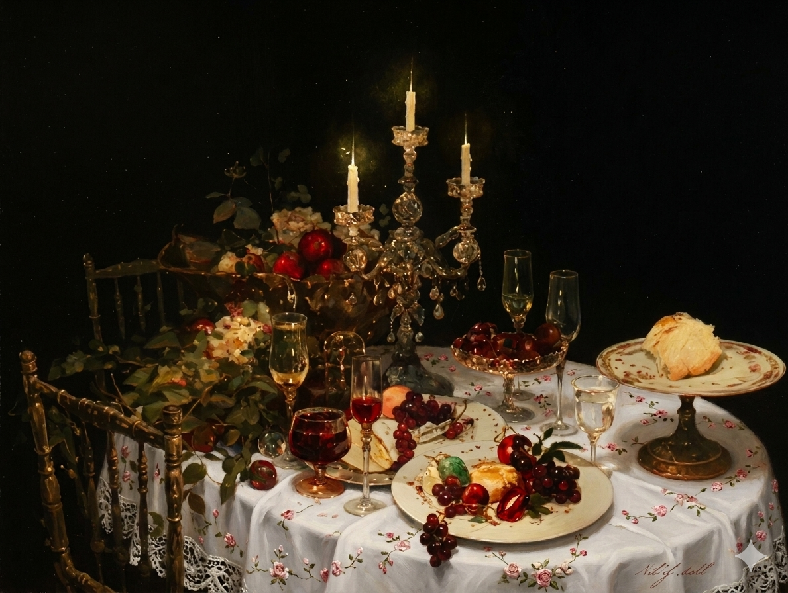
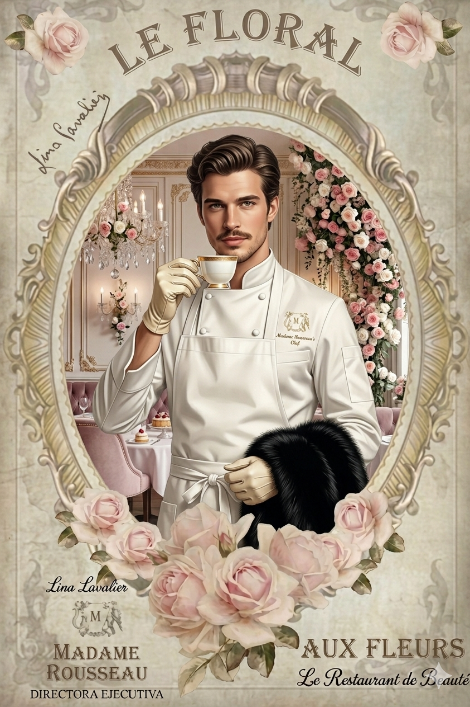
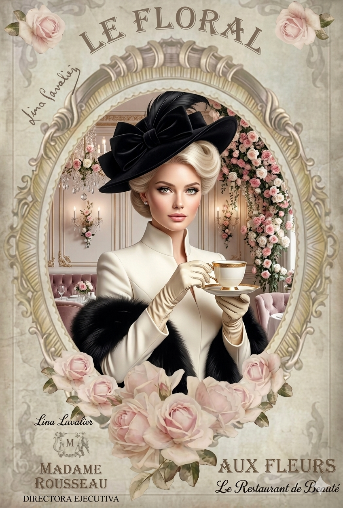

Nuestra Historia
Donde el Tiempo se Detiene entre Flores
El Origen de un Romance Gastronómico
En FloralRestaurant, creemos que comer es un acto de romance. Nacimos del deseo profundo de revivir la opulencia del estilo Rococó y la sofisticación de la era Victoriana, adaptándolas con delicadeza a la dulzura del mundo moderno.
Nuestra aventura comenzó cuando un apasionado chef y una visionaria diseñadora floral se preguntaron: ¿Y si el arte que decora la mesa fuera también el alma del plato? Fue así como fusionamos la alta cocina con la botánica, creando un refugio para quienes buscan la belleza en lo cotidiano. Aquí, cada taza de té cuenta una historia y cada bocado es una oda a la elegancia.
"En el corazón de nuestra cocina, la naturaleza y la etiqueta se encuentran para crear una experiencia sensorial inolvidable."

Los Pilares de Nuestro Palacio
Ingredientes Botánicos
Utilizamos flores comestibles y brotes orgánicos cultivados localmente. Cada pétalo es seleccionado a mano por su frescura y notas de sabor únicas.
Sostenibilidad Consciente
Honramos a la naturaleza protegiéndola. Trabajamos bajo un modelo de desperdicio cero en nuestros arreglos florales y apoyamos a floricultores locales.
Alta Etiqueta
Desde el encaje de nuestros manteles de lino hasta la vajilla de porcelana fina importada; cuidamos cada milímetro del entorno para una experiencia inmersiva.
Los Creadores del Jardín

Jean-Luc Versalles
Chef Ejecutivo & Co-fundador
"La cocina es como un lienzo rococó: requiere paciencia, capas de texturas finas y, por supuesto, la delicadeza de una rosa al emplatar."

Amélie Rose
Directora de Arte & Florista
"Espacios que susurran romance. Diseñé FloralRestaurant para que cada rincón se sienta como un abrazo de primavera victoriana."